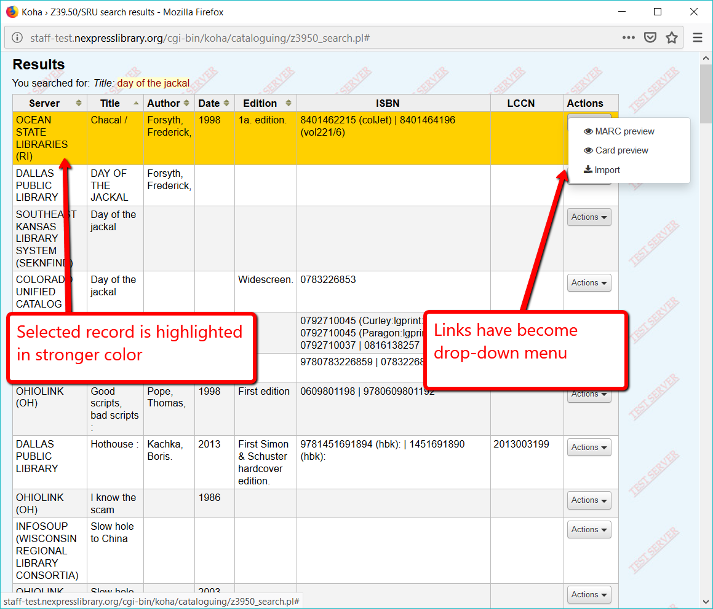

Cosmetic and minor changes¶


Reports home page¶
The look of the reports home page has changed. You can now search for a report from this page.

Reports table¶
There are new control buttons above the reports table. These allow you to print or download the full list of reports.

Z39.50 results¶
When you click on a Z39.50 result, the row is highlighted in a stronger color. The “Card,” “Marc,” and “Import” links have been converted into a drop-down button (I don’t like this and am looking at code to open the drop-down on hover instead of click).
